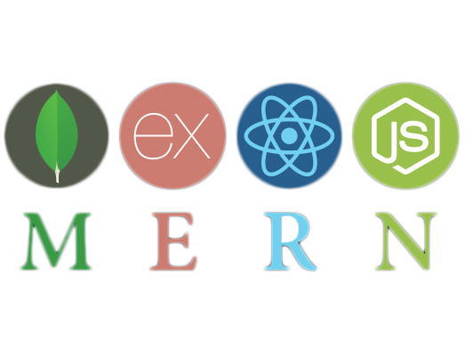

Technologies taught at Manchester Codes
-

Recently I have developed an interest in computer coding, which has resulted from me in enrolling a 24 weeks evening part-time Full-Stack coding bootcamp based in central Manchester (mcr.codes). Looking to complete boot camp July 2018.
I am a hardworking, friendly, self-motivated and reliable person with a positive attitude. I am competent working both individually and as part of a team. Can adapt to new surroundings and environment very quickly, and always willing to learn new skills and undertake any training that will help improve my career prospects.
Coding Skills – Currently learning skills to become a Full-Stack developer. Focusing on Nodejs runtime system, JavaScript programming language, Expressjs web framework, Reactjs frontend framework, MongoDB database, Git/SVN version tool.
Managerial Skills – Take care of team on supervisor absent, provide a smooth operation of the project and keep everyone notify directly involve of any enquiry/issue.
Quality Assurance Skills – Worked internal/external on prototype, development, and release projects. Experience working with both internal and external QA team on multiple projects.
Information Technology – Solid understanding of computer hardware including networking, mobile, and tablet devices. Software knowledge expanding regularly.
Customer Service – No technical jargon when explaining and providing support to customers, everything explained in clear plain English, with a smile on their face.
Sales Performance – Meeting individual Key Performance Indicators (KPI) that meets the objectives of the company resulting positive motivation within the team.
Senior Games QA Tester | NaturalMotion | 5+ years
Understanding of the QA process and testing terminology. Knowledge of design methods in Agile software development. Strong interpersonal skills and the ability to work with a variety of individuals. Excellent communication skills and understanding of project management requirements.
Sales Advisor & Lab Assistance | Jessops | 2+ years
Sales Advisor of the Store, giving customers expert product advice (face to face & via phone) and bringing the technology we sell to life. Work individually and part of a team. Book in delivery, replenishing and merchandising the store, trace up repairs and customer’s orders, running and maintaining the photo-processing lab.
24 Weeks Full-Stack Coding Bootcamp
- @mcr.codes
Microsoft Certified Desktop Support Technician
- Self-Study
Cisco Certified Network Associate
Dreamweaver - An Introduction
- Oxford Cherwell Valley College
Degree in Electronics
- Oxford Brookes University
Good familiarity with Microsoft Office (Word, Excel, PowerPoint, and Outlook)
Built computers running Windows operating system.
Worked in all types of an environment from small office to warehouse.
Experience with typesetting and printing.